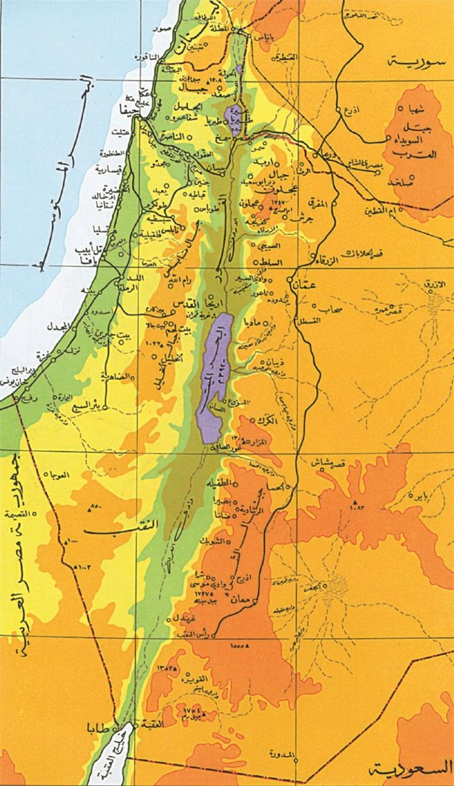

بداية الاحتلال
لماذا فلسطين؟ تخيل معي عزيزي القارىء ان كذبة واحدة او خدعة واحدة يصدقها المثقفون والجاهلون وحتى إذ علمو بالحقيقة فلن يصدقوها من أجل مصالح دولية متبادلة ولكن غير منسية في الشعوب العربية الثورية، فلسطين المحتلة من قبل الكيان الصهيوني وليس المحتلة باليهود كما يقول البعض فهنالك فرق شاسع بين اليهودي و الصهيوني. من هم بني إسرائيل؟ ولماذا فلسطين؟
في البداية دعني اوضح لك مميزات فلسطين أو بما يعرف عن فلسطين المحتلة من قبل الكيان الصهيوني ، لمحة عن فلسطين تمتاز فلسطين بعراقتها وتاريخها وعادات الضيافة المميزة فيها، تقع في قلب العالم وتعتبر نقطة التقاء بين أفريقيا وأوروبا واسيا، تتميز فلسطين بتعدد اللغات المستخدمة فيها وتعدد الثقافات والمعتقدات. وتعتبر فلسطين مهد الديانات السماوية ومركزاًً لأهم المعالم الدينية والشواهد التاريخية. وبالطبع هنالك اسباباً كثيرة تجعل المحتلين يحتلون أرض القدس وهم كالأتي:
يرى أنصار الصهيونية أنها حركة تحرير وطنية لإعادة شعب مضطهد مقيم كأقليات في مجموعة متنوعة من الدول إلى وطن أجداده، وقد ساهمت محرقة الهولوكوست في إقناع اليهود بأفكار الحركة الصهيونية بشكل كبير بدعوي المظلومية ودافعًا كبيرًا للهجرة والقتال لإقامة دولتهم اليهودية في فلسطين. وهذه المعتقدات يرونها إجابات عن التساؤلات لغسل عقول الجيل الجديد حول العالم بأكمله
متى بدا الاحتلال؟
بعد انتصار القوات البريطانية على تركيا في الحرب العالمية الأولى بقيادة الجنرال اللنبي دخلت فلسطين عام 1917 تحت الانتداب البريطاني حتى عام 1948، حيث انسحبت مفسحة المجال أمام اليهود لإقامة دولتهم في فلسطين التي سميت إسرائيل وهذه المصادر موجودة في العديد من الكتب مثل حرب المئة عام على فلسطين بيد رشيد الخالدي

يلخص الكتاب على مدار ستة فصول نقاط التحول الرئيسية في تاريخ الحرب على فلسطين، فنجده يسلط الضوء على الحقب التاريخية المختلفة ابتداء من صدور كتاب ثيودور هرتزل "دولة اليهود" عام 1896، وحتى الانتفاضة الفلسطينية الأولى والثانية وتاريخ الفترة المعاصرة، بما في ذلك الحروب المتكررة على قطاع غزة مطلع القرن الحادي والعشرين. لنصبح بنهاية الكتاب مُلمين بمختلف نواحي القضية الفلسطينية من وجهة نظر مؤرخ فلسطيني الأصل عايش بنفسه أغلب تحولاتها.
كيف دخلت إسرائيل على فلسطين اول مرة؟ (بداية السواد)
في عام 1967 قام الجيش الإسرائيلي باحتلال الضفة الغربية من نهر الأردن التي كانت في ذلك الحين جزء من الأردن، كما احتل قطاع غزة وشبه جزيرة سيناء وهضبة الجولان السورية بالإضافة إلى مناطق أردنية أخرى في الشمال، وعرفت هذه الحرب باسم حرب الايام الستة، ودخلت القاموس الفلسطيني باسم النكسة واحتلت إسرائيل سيناء.

من الذي ساعد الصهاينة على احتلال فلسطين وما الغرض من ذالك؟ بالطبع نعلم بأن المصالح دائما ما تكون مشتركة بمعنى او باخر وشخصيا اصف بإن اقذر مصلحة والأسواء ما في الأمر هو احتلالك لوطن ضعيف جدا سياسيًا وهكذا نجد بإن اعتمد اليهود من ناحية عسكرية على منظمة «الهاجاناه» التي كانت ميليشيا شبه سرية تعاونت مع السلطات البريطانية خلال الحرب العالمية الثانية، ثم قاتلت البريطانيين والعرب عشية إلغاء الانتداب.
بداية المذابح
مجزرة عين الزيتون حدثت يوم 1 مايو 1948 في قرية عين الزيتون الفلسطينية شمال صفد التي كانت جزءاً من الانتداب البريطاني على فلسطين. تم قتل ما بين 30 و 70 أسير فلسطيني من قبل قوات بلماح. بعد سقوط القرية، تمهد الطريق أمام القوات الصهيونية لاحتلال مدينة صفد كانت عين الزيتون في ذلك الوقت قرية عربية فلسطينية تبعد عن مدينة صفد ميلاً واحداً، وميلاً عن مستعمرة زيتيم المجاورة. وكان يبلغ عدد سكانها حوالي 800 نسمة في سنة 1945. كان يعتقد اليهود المحليون أن سكان عين الزيتون شاركوا في قتل يهود صفد عام 1929
بمجرد دخول القوات القرية معظم الشباب من الذكور البالغين فروا لكن 37 اسروا ثم قامت جنود البلماح بتدمير القرية وأحرقوا المنازل في القرية. وذكرأحد ضباط كتيبة بلماح، إيلاد بيليد، أن «رجالنا بدأوا بنسف بيوت القرية. نشوة النصر أعمتهم واهاجتهم، فدمروا الممتلكات وكانوا يسحقون وينسفون وكانوا سعداء ويرون ذلك انتقام لما قام به العرب ضد يهود صفد وعين زيتون

مذبحة بيت داراس
مذبحة بيت دراس هي مذبحة ارتكبتها القوات الصهيونيّة بحقّ أهالي قرية بيت دراس الفلسطينيّة في 21 مايو عام 1948. حيث أن القوات الصهيونية عندما وصلت إلى القرية طوقتها من كل جانب لمنع وصول النجدات إليها، ثم بدأت بقصفها بنيران المدفعية والهاونات بغزارة كبيرة. أدت المذبحة إلى قتل حوالي 260 قتيلا من سكان القرية، قبل أن يتم تدميرها وتهجير أهلها وإقامة مستعمرة صهيونية مكانها.وفي عام 1992، وُصف موقع القرية على النحو التالي: ولم يبق من أبنية القرية اليوم سوى أساس منزل وحيد، وبعض الحطام المتناثر، وتغطي النباتات البرية وبينها الصبار وأشجار الكينا المكان ولا يزال أحد الشوارع القديمة على الأقل ماثلاً للعيان ويزرع سكان المستعمرات الإسرائيلية المجاورة أراضي القرية.